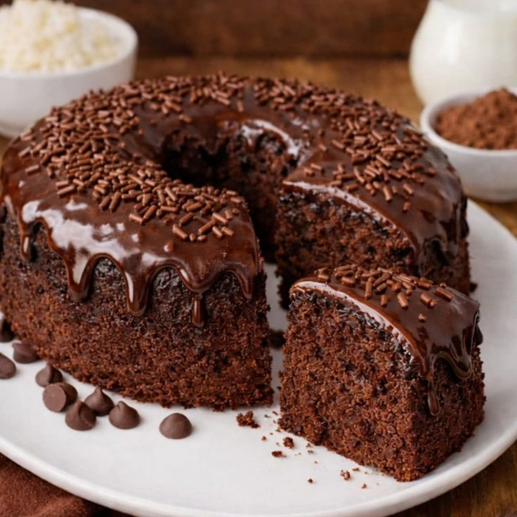
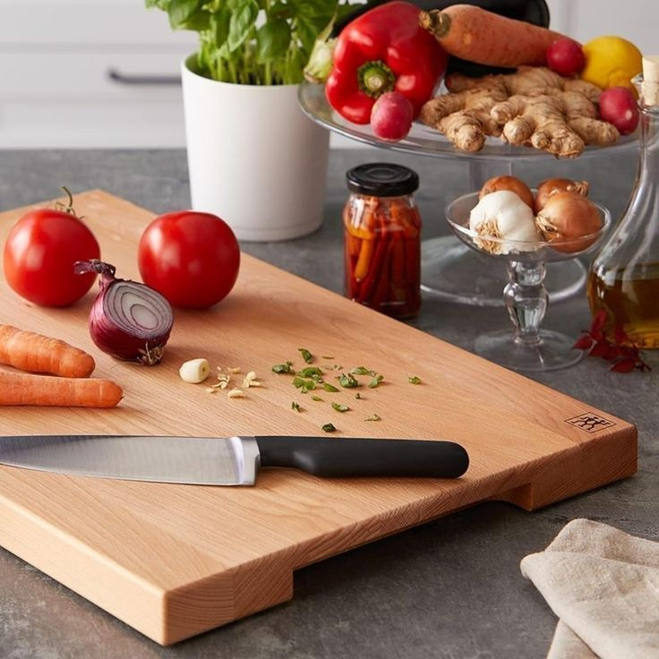
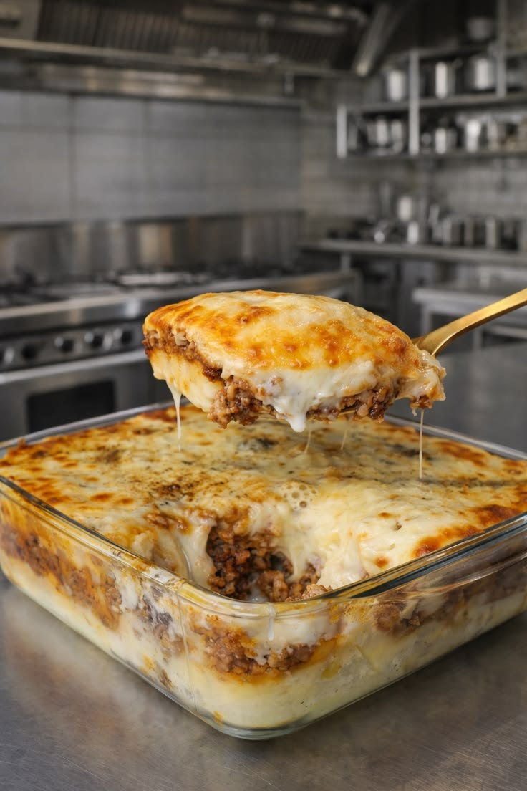

Bem-vindo ao Laura's Kitchen
Laura's Kitchen é um blog dedicado a compartilhar receitas deliciosas, dicas de culinária e histórias inspiradoras sobre o mundo da gastronomia. Nossa missão é tornar a cozinha acessível e divertida para todos, desde iniciantes até chefs experientes.
Explore nossas seções e descubra novas receitas, truques de cozinha e muito mais!
Alguns tópicos que tratamos
- Receitas de pratos principais
- Sobremesas irresistíveis
- Dicas de culinária e técnicas
Pilares de uma cozinha eficiente
Planejamento
Planejar suas refeições e organizar sua cozinha são passos essenciais para uma experiência culinária mais eficiente e agradável.
Organização do freezer
Manter o freezer organizado ajuda a conservar os alimentos por mais tempo e facilita o acesso aos ingredientes.
Técnicas de preparo
Aprender e dominar diferentes técnicas de preparo é fundamental para criar pratos deliciosos e impressionar seus convidados.
Destaque:

Receita: Bolo fit
tempo de preparo: 45 minutos

Dica: Escolhendo a tábua certa
Descubra como escolher a tábua de corte ideal para diferentes tipos de alimentos e técnicas de preparo.

Receita: Escondidinho com mandioca
tempo de preparo: 1 hora